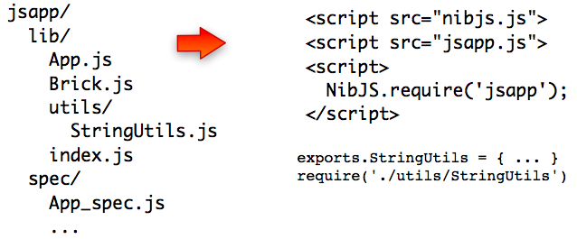

NibJS - Package CommonJS applications for the browser
NibJS packages javascript and coffeescript applications for the browser. It comes
with a simple nibjs commandline tool that includes a lot of options!

The basic use case is really simple, you want to concatenate lib/**/*.js
files, while respecting CommonJS conventions about exports and require.